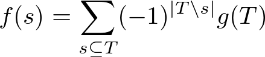
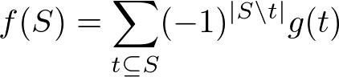

高速メビウス変換(FMT)
コードについての説明
ゼータ変換(1), (2)の逆変換である. 包除と考えた方が良さそう.
(1) s を含む上位集合 T についての包除

(2) S に含まれる下位集合 t についての包除

そしてこのメビウス変換は計算量 O(n*2^n) で行うことができ, 実装自体は以下のようにシンプルにかける.
(1) については i 周目の f[j] は j の下位 i 桁以外一致しているような数 k で j を含むもの(j ⊆ k) について包除を取っている.
j の i 桁目が 0 のものについては i 周目に更新する必要があるがそれは前の周までの f[j | (1 << i)] を引いてやれば包除を取ることができる(賢い).
(2) については i 周目の f[j] は j の下位 i 桁以外一致しているような数 k で j に含まれるもの(k ⊆ j) について包除を取っている.
j の i 桁目が 1 のものについては i 周目に更新する必要があるがそれは前の周までの f[j ^ (1 << i)] を引いてやれば包除を取ることができる.
時間計算量: O(n*2^n)
コード
// 上位集合(含む集合)の包除(1)
void fast_mobius_transform(int n, vector<int>& f)
{
for(int i = 0; i < n; ++i){
for(int j = 0; j < (1 << n); ++j){
if(!(j & (1 << i))) f[j] -= f[j | (1 << i)];
}
}
}
// 下位集合(含まれる集合)の包除(2)
void fast_mobius_transform(int n, vector<int>& f)
{
for(int i = 0; i < n; ++i){
for(int j = 0; j < (1 << n); ++j){
if(j & (1 << i)) f[j] -= f[j ^ (1 << i)];
}
}
}